조경기능사 (2015-10-10 기출문제)
1과목: 조경일반
1. 다음 [보기]에서 설명하는 것은?
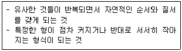
- 점이(漸移)
- 운율(韻律)
- 추이(推移)
- 비례(⽐例)
(정답률: 77%)

2. 다음 중 전라남도 담양지역의 정자원림이 아닌 것은?
- 소쇄원 원림
- 명옥헌 원림
- 식영정 원림
- 임대정 원림
(정답률: 59%)
3. 화단 50m의 길이에 1열로 생울타리(H1.2×W0.4)를 만들려면 해당 규격의 수목이 최소한 얼마나 필요한가?
- 42주
- 125주
- 200주
- 600주
(정답률: 71%)
4. 다음 제시된 색 중 같은 면적에 적용했을 경우 가장 좁아 보이는 색은?
- 옅은 하늘색
- 선명한 분홍색
- 밝은 노란 회색
- 진한 파랑
(정답률: 83%)
5. 도면의 작도 방법으로 옳지 않은 것은?
- 도면은 될 수 있는 한 간단히 하고, 중복을 피한다.
- 도면은 그 길이 방향을 위아래 방향으로 놓은 위치를 정위치로 한다.
- 사용 척도는 대상물의 크기, 도형의 복잡성 등을 고려, 그림이 명료성을 갖도록 선정한다.
- 표제란을 보는 방향은 통상적으로 도면의 방향과 일치하도록 하는 것이 좋다.
(정답률: 75%)
6. 중국 조경의 시대별 연결이 옳은 것은?
- 명 - 이화원(颐和园)
- 진 - 화림원(華林園)
- 송 - 만세산(萬歲⼭)
- 명 - 태액지(太液池)
(정답률: 65%)
7. 다음 중 배치도에 표시하지 않아도 되는 사항은?
- 축척
- 건물의 위치
- 대지 경계선
- 수목 줄기의 형태
(정답률: 89%)
8. 다음 중 식별성이 높은 지형이나 시설을 지칭하는 것은?
- 비스타(vista)
- 캐스케이드(cascade)
- 랜드마크(landmark)
- 슈퍼그래픽(super graphic)
(정답률: 89%)
9. 다음 [보기]의 설명은 어느 시대의 정원에 관한 것인가?
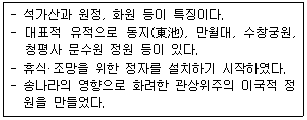
- 조선
- 백제
- 고려
- 통일신라
(정답률: 81%)
10. 이탈리아 바로크 정원 양식의 특징이라 볼 수 없는 것은?
- 미원(maze)
- 토피아리
- 다양한 물의 기교
- 타일포장
(정답률: 65%)
11. 해가 지면서 주위가 어둑해질 무렵 낮에 화사하게 보이던 빨간 꽃이 거무스름해져 보이고, 청록색 물체가 밝게 보인다. 이러한 원리를 무엇이라고 하는가?
- 명순응
- 면적 효과
- 색의 항상성
- 푸르키니에 현상
(정답률: 73%)
12. 다음 중 어린이들의 물놀이를 위해서 만든 얕은 물 놀이터는?
- 도섭지
- 포석지
- 폭포지
- 천수지
(정답률: 82%)
13. 먼셀 표색계의 색채 표기법으로 옳은 것은?
- 2040-Y70R
- 5R 4/14
- 2:R-4.5-9s
- 221c
(정답률: 79%)
14. 조선시대 창덕궁의 후원(비원, 秘苑)을 가리키던 용어로 가장 거리가 먼 것은?
- 북원(北園)
- 후원(後苑)
- 금원(禁園)
- 유원(留園)
(정답률: 70%)
15. 서양의 대표적인 조경양식이 바르게 연결된 것은?
- 이탈리아 - 평면기하학식
- 영국 - 자연풍경식
- 프랑스 - 노단건축식
- 독일 - 중정식
(정답률: 87%)
2과목: 조경재료
16. 방사(防砂)ㆍ방진(防塵)용 수목의 대표적인 특징 설명으로 가장 적합한 것은?
- 잎이 두껍고 함수량이 많으며 넓은 잎을 가진 치밀한 상록수여야 한다.
- 지엽이 밀생한 상록수이며 맹아력이 강하고 관리가 용이한 수목이어야 한다.
- 사람의 머리가 닿지 않을 정도의 지하고를 유지하고 겨울에는 낙엽되는 수목이어야 한다.
- 빠른 생장력과 뿌리뻗음이 깊고, 지상부가 무성하면서 지엽이 바람에 상하지 않는 수목이어야 한다.
(정답률: 59%)
17. 다음 그림과 같은 형태를 보이는 수목은?
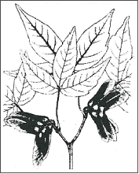
- 일본목련
- 복자기
- 팔손이
- 물푸레나무
(정답률: 77%)
18. 목재의 역학적 성질에 대한 설명으로 틀린 것은?
- 옹이로 인하여 인장강도는 감소한다.
- 비중이 증가하면 탄성은 감소한다.
- 섬유포화점 이하에서는 함수율이 감소하면 강도가 증대된다.
- 일반적으로 응력의 방향이 섬유방향에 평행한 경우 강도(전단강도 제외)가 최대가 된다.
(정답률: 52%)
19. 다음 그림은 어떤 돌쌓기 방법인가?
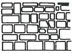
- 층지어쌓기
- 허튼층쌓기
- 귀갑무늬쌓기
- 마름돌 바른층쌓기
(정답률: 76%)
20. 그림은 벽돌을 토막 또는 잘라서 시공에 사용할 때 벽돌의 형상이다. 다음 중 반토막 벽돌에 해당하는 것은?
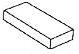
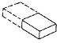
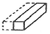
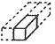
(정답률: 90%)
21. 목재의 치수 표시방법으로 맞지 않는 것은?
- 제재 치수
- 제재 정치수
- 중간 치수
- 마무리 치수
(정답률: 64%)
22. 다음 중 주택 정원에 식재하여 여름에 꽃을 감상할 수 있는 수종은?
- 식나무
- 능소화
- 진달래
- 수수꽃다리
(정답률: 82%)
23. 다음 중 9월 중순 ~ 10월 중순에 성숙된 열매색이 흑색인 것은?
- 마가목
- 살구나무
- 남천
- 생강나무
(정답률: 63%)
24. 시멘트의 저장과 관련된 설명 중 ( )안에 해당하지 않는 것은?
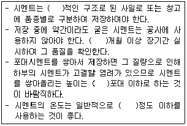
- 13
- 6
- 방습
- 50℃
(정답률: 67%)
25. 구조용 경량콘크리트에 사용되는 경량골재는 크게 인공, 천연 및 부산경량골재로 구분할 수 있다. 다음 중 인공경량골재에 해당되지 않는 것은?
- 화산재
- 팽창혈암
- 팽창점토
- 소성플라이애쉬
(정답률: 76%)
26. 다음 중 시멘트가 풍화작용과 탄산화 작용을 받은 정도를 나타내는 척도로 고온으로 가열하여 시멘트 중량의 감소율을 나타내는 것은?
- 경화
- 위응결
- 강열감량
- 수화반응
(정답률: 78%)
27. 재료가 외력을 받았을 때 작은 변형만 나타내도 파괴되는 현상을 무엇이라 하는가?
- 취성
- 강성
- 인성
- 전성
(정답률: 81%)
28. 안료를 가하지 않아 목재의 무늬를 아름답게 낼 수 있는 것은?
- 유성페인트
- 에나멜페인트
- 클리어래커
- 수성페인트
(정답률: 73%)
29. 다음의 설명에 해당하는 장비는?
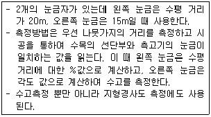
- 윤척
- 측고봉
- 하고측고기
- 순토측고기
(정답률: 55%)
30. 조경에 활용되는 석질재료의 특성으로 옳은 것은?
- 열전도율이 높다.
- 가격이 싸다.
- 가공하기 쉽다.
- 내구성이 크다.
(정답률: 76%)
31. 용기에 채운 골재절대용적의 그 용기 용적에 대한 백분율로 단위질량을 밀도로 나눈 값의 백분율이 의미하는 것은?
- 골재의 실적률
- 골재의 입도
- 골재의 조립률
- 골재의 유효습수율
(정답률: 62%)
32. 다음 [보기]의 조건을 활용한 골재의 공극률 계산식은?
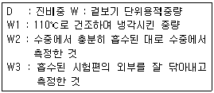
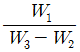
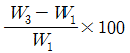
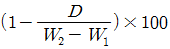
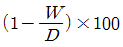
(정답률: 57%)
33. 유동화제에 의한 유동화 콘크리트의 슬럼프 증가량의 표준 값으로 적당한 것은?
- 2 ~ 5㎝
- 5 ~ 8㎝
- 8 ~ 11㎝
- 11 ~ 14㎝
(정답률: 65%)
34. 겨울철에도 노지에서 월동할 수 있는 상록 다년생 식물은?
- 옥잠화
- 샐비어
- 꽃잔디
- 맥문동
(정답률: 83%)
35. 다른 지방에서 자생하는 식물을 도입한 것을 무엇이라고 하는가?
- 재배식물
- 귀화식물
- 외국식물
- 외래식물
(정답률: 73%)
3과목: 조경 시공 및 관리
36. 수목을 이식할 때 고려사항으로 가장 부적합한 것은?
- 지상부의 지엽을 전정해 준다.
- 뿌리분의 손상이 없도록 주의하여 이식한다.
- 굵은 뿌리의 자른 부위는 방부처리 하여 부패를 방지한다.
- 운반이 용이하게 뿌리분은 기준보다 가능한 한 작게 하여 무게를 줄인다.
(정답률: 89%)
37. 콘크리트 시공연도와 직접 관계가 없는 것은?
- 물 – 시멘트비
- 재료의 분리
- 골재의 조립도
- 물의 정도 함유량
(정답률: 58%)
38. 다음 중 과일나무가 늙어서 꽃 맺음이 나빠지는 경우에 실시하는 전정은 어느 것인가?
- 생리를 조절하는 전정
- 생장을 돕기 위한 전정
- 생장을 억제하는 전정
- 세력을 갱신하는 전정
(정답률: 68%)
39. 콘크리트의 배합의 종류로 틀린 것은?
- 시방배합
- 현장배합
- 시공배합
- 질량배합
(정답률: 44%)
40. 소나무 순지르기에 대한 설명으로 틀린 것은?
- 매년 5~6월경에 실시한다.
- 중심 순만 남기고 모두 자른다.
- 새순이 5~10㎝의 길이로 자랐을 때 실시한다.
- 남기는 순도 힘이 지나칠 경우 1/2~1/3 정도로 자른다.
(정답률: 79%)
41. 코흐의 4원칙에 대한 설명 중 잘못된 것은?
- 미생물은 반드시 환부에 존재해야 한다.
- 미생물은 분리되어 배지상에서 순수 배양되어야 한다.
- 순수 배양한 미생물은 접종하여 동일한 병이 발생되어야 한다.
- 발병한 피해부에서 접종에 사용한 미생물과 동일한 성질을 가진 미생물이 반드시 재분리 될 필요는 없다.
(정답률: 81%)
42. 토양에 따른 경도와 식물생육의 관계를 나타낼 때 나지화가 시작되는 값(㎏f/cm2)은? (단, 지표면의 경도는 Yamanaka 경도계로 측정한 것으로 한다.)
- 9.4 이상
- 5.8 이상
- 13.0 이상
- 3.6 이상
(정답률: 67%)
43. 파이토플라스마에 의한 수목병이 아닌 것은?
- 벚나무 빗자루병
- 붉나무 빗자루병
- 오동나무 빗자루병
- 대추나무 빗자루병
(정답률: 55%)
44. 대목을 대립종자의 유경이나 유근을 사용하여 접목하는 방법으로 접목한 뒤에는 관계습도를 높게 유지하며, 정식 후 근두암종병의 발병율이 높은 단점을 갖는 접목법은?
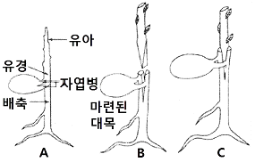
- 아접법
- 유대접
- 호접법
- 교접법
(정답률: 62%)
45. 공사의 설계 및 시공을 의뢰하는 사람을 뜻하는 용어는?
- 설계자
- 시공자
- 발주자
- 감독자
(정답률: 86%)
46. 어른과 어린이 겸용벤치 설치 시 앉음면(좌면, 坐⾯)의 적당한 높이는?
- 25 ~ 30㎝
- 35 ~ 40㎝
- 45 ~ 50㎝
- 55 ~ 60㎝
(정답률: 75%)
47. 건설재료의 할증률이 틀린 것은?
- 붉은 벽돌 : 3%
- 이형철근 : 5%
- 조경용 수목 : 10%
- 석재판붙임용재(정형돌) : 10%
(정답률: 63%)
48. 식재작업의 준비단계에 포함되지 않는 것은?
- 수목 및 양생제 반입 여부를 재확인한다.
- 공정표 및 시공도면, 시방서 등을 검토한다.
- 빠른 식재를 위한 식재지역의 사전조사는 생략한다.
- 수목의 배식, 규격, 지하 매설물 등을 고려하여 식재 위치를 결정한다.
(정답률: 87%)
49. 콘크리트 포장에 관한 설명 중 옳지 않은 것은?(오류 신고가 접수된 문제입니다. 반드시 정답과 해설을 확인하시기 바랍니다.)
- 보조 기층을 튼튼히 해서 부동침하를 막아야한다.
- 두께는 10㎝ 이상으로 하고, 철근이나 용접철망을 넣어 보강한다.
- 물ㆍ시멘트의 비율은 60% 이내, 슬럼프의 최대값은 5㎝ 이상으로 한다.
- 온도변화에 따른 수축 ㆍ 팽창에 의한 파손 방지를 위해 신축줄눈과 수축줄눈을 설치한다.
(정답률: 74%)
50. 현대적인 공사관리에 관한 설명 중 가장 적합한 것은?
- 품질과 공기는 정비례한다.
- 공기를 서두르면 원가가 싸게 된다.
- 경제속도에 맞는 품질이 확보 되어야 한다.
- 원가가 싸게 되도록 하는 것이 공사관리의 목적이다.
(정답률: 77%)
51. 다음 중 관리해야 할 수경 시설물에 해당되지 않는 것은?
- 폭포
- 분수
- 연못
- 덱(deck)
(정답률: 79%)
52. 아황산가스에 민감하지 않은 수종은?
- 소나무
- 겹벚나무
- 단풍나무
- 화백
(정답률: 56%)
53. 다음 입찰계약 순서 중 옳은 것은?
- 입찰공고→낙찰→계약→개찰→입찰→현장설명
- 입찰공고→현장설명→입찰→계약→낙찰→개찰
- 입찰공고→현장설명→입찰→개찰→낙찰→계약
- 입찰공고→계약→낙찰→개찰→입찰→현장설명
(정답률: 85%)
54. 조경 목재시설물의 유지관리를 위한 대책 중 적절하지 않는 것은?
- 통풍을 좋게 한다.
- 빗물 등의 고임을 방지한다.
- 건조되기 쉬운 간단한 구조로 한다.
- 적당한 20~40℃온도와 80% 이상의 습도를 유지시킨다.
(정답률: 78%)
55. 토양 및 수목에 양분을 처리하는 방법의 특징 설명이 틀린 것은?
- 액비관주는 양분흡수가 빠르다.
- 수간주입은 나무에 손상이 생긴다.
- 엽면시비는 뿌리 발육 불량 지역에 효과적이다.
- 천공시비는 비료 과다투입에 따른 염류장해발생 가능성이 없다.
(정답률: 72%)
56. 비탈면의 녹화와 조경에 사용되는 식물의 요건으로 가장 부적합한 것은?
- 적응력이 큰 식물
- 생장이 빠른 식물
- 시비 요구도가 큰 식물
- 파종과 식재시기의 폭이 넓은 식물
(정답률: 82%)
57. 다음 중 원가계산에 의한 공사비의 구성에서 『경비』에 해당하지 않는 항목은?
- 안전관리비
- 운반비
- 가설비
- 노무비
(정답률: 64%)
58. 잔디깎기의 목적으로 옳지 않은 것은?
- 잡초 방제
- 이용 편리 도모
- 병충해 방지
- 잔디의 분열억제
(정답률: 77%)
59. 다음 중 측량의 3대 요소가 아닌 것은?
- 각측량
- 거리측량
- 세부측량
- 고저측량
(정답률: 66%)
60. 경사도(勾配, slope)가 15%인 도로면상의 경사거리 135m에 대한 수평거리는?
- 130.0m
- 132.0m
- 133.5m
- 136.5m
(정답률: 57%)